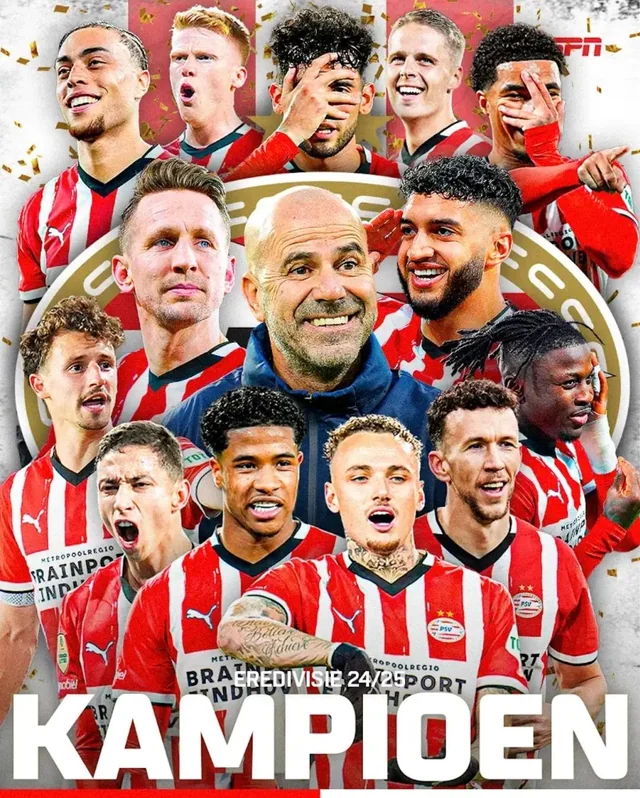
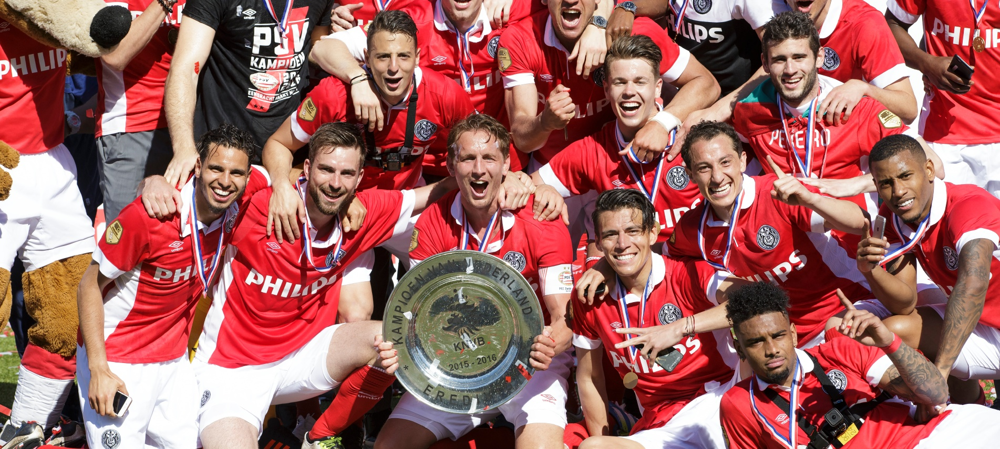
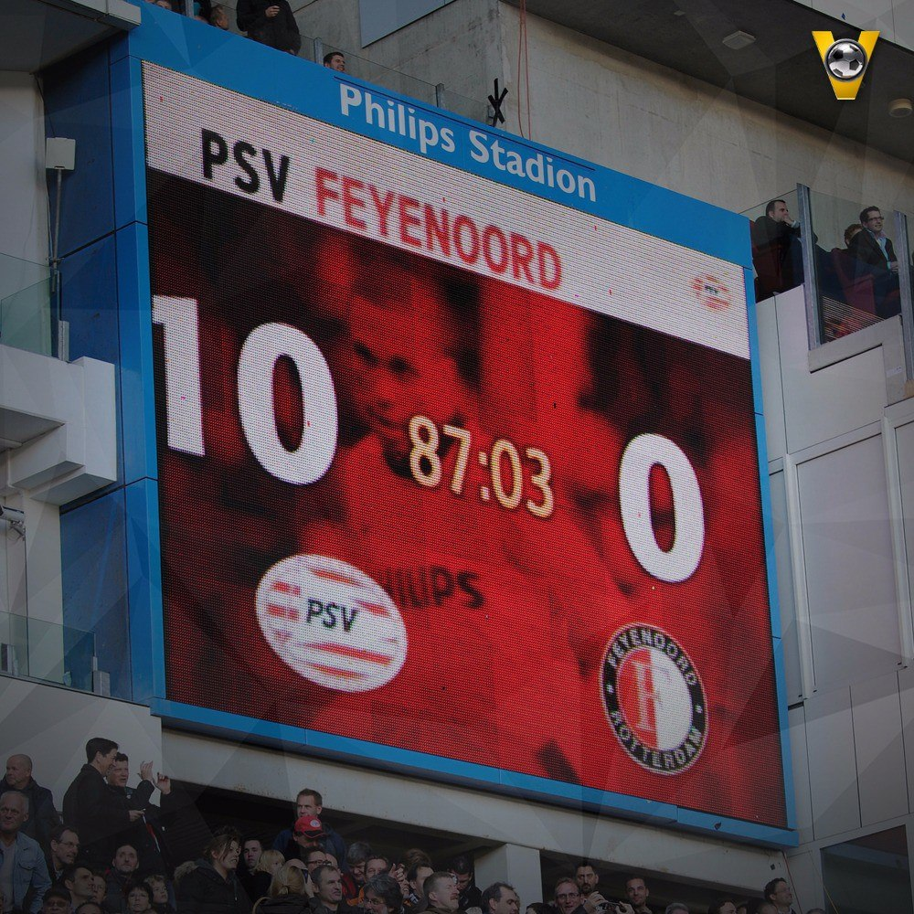
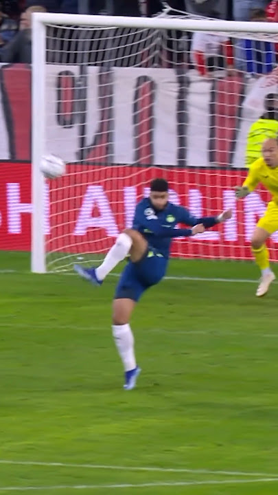
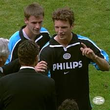
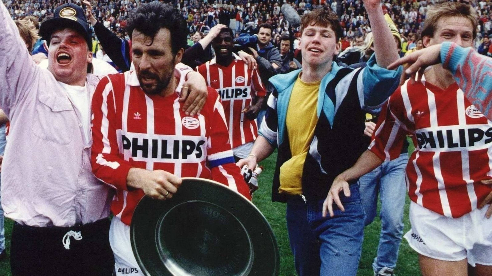
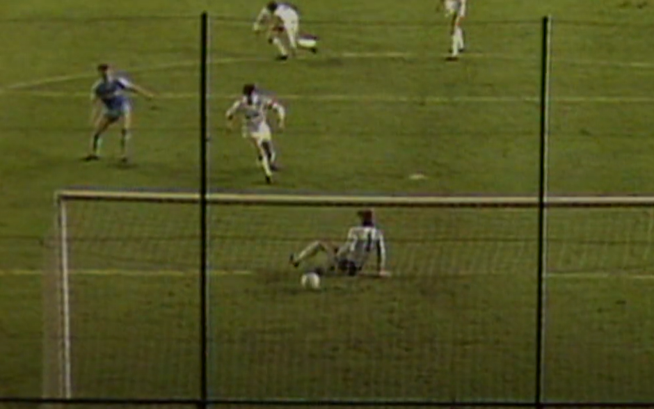
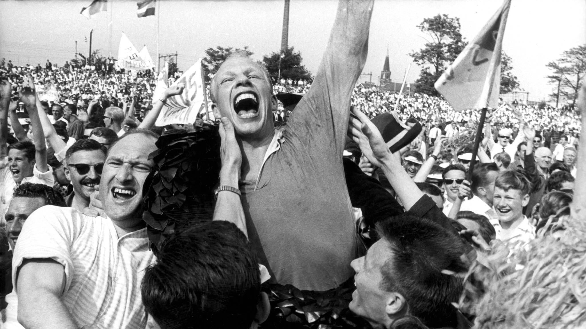
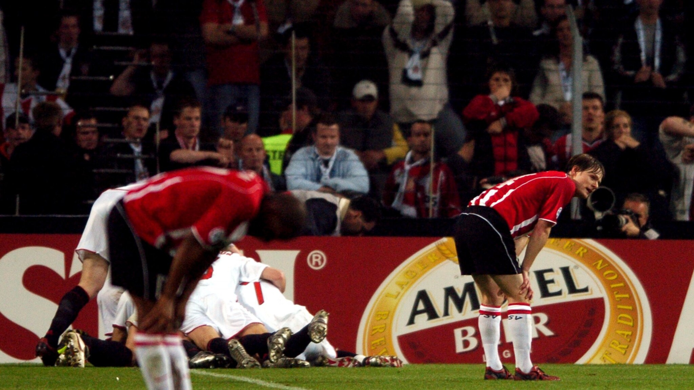

Kampioen op de laatste speeldag, een onmogelijke goal in de laatste minuut. Zulke momenten zijn de droom van iedere voetballiefhebber. Wat hebben we het als PSV-supporters dan goed!
Op deze website beschrijven we tien magische momenten waar iedere PSV-supporter nog steeds met kippenvel aan zal terugdenken. En we zijn op zoek naar verhalen! Hoe beleefde jij het? We verzamelen hier de mooiste, waargebeurde verhalen die eigenlijk te mooi waren om waar te zijn!
Lees het alsof je er (weer) bij was.
PSV wat ben je mooi!
Van 9 punten voor naar 9 punten achter, met nog 5 wedstrijden te gaan. En dan gebeurt het onmogelijke!
Bekijk verhaal →
Jetro Willems had 99% vertrouwen. De titelstrijd werd beslist in Doetinchem.
Bekijk verhaal →
Geen titel, wel historie. Een ongelofelijke uitslag die bij rust nog ondenkbaar was.
Bekijk verhaal →
De krankzinnigste ontknoping ooit. PSV, Ajax en AZ strijden tot de laatste seconde.
Bekijk verhaal →Van hel naar hemel in seconden. Magdenburg, Sevilla, Sjaktar en de 4-3 tegen Feyenoord.
Bekijk verhaal →
Kansloos voor de start, maar een wonder op het veld. Nilis pakte rood en 'de Paus' belde.
Bekijk verhaal →
Een vergeten maar bizarre ontknoping. Wachten met een radiootje tijdens een pitch invasion.
Bekijk verhaal →

Een droomscenario voor een kampioenschap: de titelstrijd in een direct duel tegen Ajax.
Bekijk verhaal →
Pijn hoort er ook bij. Milaan (3-1), het muntje, boerenkoolvoetbal en Kaiserslautern.
Bekijk verhaal →
Heb jij een anekdote? Deel hem hier. We nemen graag contact met je op, en goedgekeurde verhalen plaatsen we op de site.